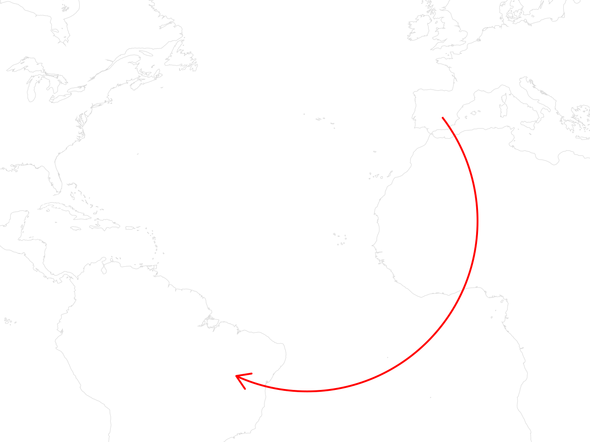

En els països industrialitzats del Nord global, especialment a Europa i als Estats Units, es dóna una sèrie de factors que produeixen un dèficit de cures:
Envelliment demogràfic: més persones amb necessitats de cures a la vellesa, però menys població jove que se’n faci càrrec.
Entrada al mercat laboral de les dones: en les darreres dècades, cada vegada més dones fan treballs remunerats en el mercat laboral i es dóna una sortida de l’àmbit domèstic.
Els Estats del Benestar no donen respostes: les retallades als serveis públics culminen un desmantellament progressiu d’un anomenat “Estat del Benestar” que mai havia arribat a abastar tota la població, però sí que pal·liava algunes desigualtats socioeconòmiques.
Model social familiarista: organització de les llars i de l’àmbit privat basada en la família nuclear, amb una tendència cada cop més gran a l’atomització i l’individualisme.
Manca de corresponsabilitat: les tasques reproductives i de cures no es reparteixen equitativament, sinó que a través de la divisió sexual del treball recauen en les dones.

Alhora, el Nord global i el sistema capitalista basen la seva riquesa en una economia extractivista. S’implementa un model desarrollista als països del Sud Global, per exemple a l’Amèrica Llatina. Aquest desarrollo es basa en l’extracció dels recursos i de les matèries primeres -els béns comuns- dels territoris llatinoamericans.
L’extractivisme i el desarrollo són dues cares de la mateixa moneda, que causen un enriquiment dels països industrialitzats del Nord i un empobriment dels països no industrialitzats del Sud global. Per sostenir el sistema hi ha tot un seguit d’estructures racistes, sexistes, capacitistes, edatistes i colonials que fan de pilar del capitalisme globalitzat.
El model capitalista del desarrollo permet que cada any milers d’empreses transnacionals facin macroprojectes extractivistes que espolien els béns comuns en els territoris rurals. Aigua, minerals, combustibles fòssils, monocultius, aliments, etc. són els recursos naturals que s’extreuen a gran escala.

Això genera uns efectes d’alta violència per la natural i per les persones: contaminació, alteració del territori, inundacions, desertificació, desforestació, sequera… Alhora, trenca els equilibris de les economies i activitats locals, fins al punt d’impedir l’abastiment i l’autosuficiència de les comunitats.
Aquest impacte en els territoris rurals generen manca d’oportunitats a les poblacions i, en particular, força l’entrada de les dones al mercat laboral. Quan no troben alternatives als seus territoris d’origen, es veuen forçades a una migració de l’àmbit rural a l’àmbit urbà. Al seu torn, en marxar es generen uns dèficits de cures. Altres dones -familiars i persones pròximes, o bé treballadores remunerades- han d’assumir les cures que les dones migrades ja no poden proveir. Siguin cures a infants, a persones grans o malaltes… o bé al territori, la comunitat i la natura.
Amb aquest rerefons es donen les trames nacionals i transnacionals de les cures. A causa d’un model socioeconòmic capitalista, que no és sostenible ni responsable amb la natura, els països del Sud Global pateixen un elevat fluxe migratori. Primer, de l’entorn rural a les zones urbanes. L’increment de les poblacions a les ciutats genera un estrès socioeconòmic, ja que sovint no es poden assumir els volums de persones desplaçades des del camp a la ciutat.

La manca d’oportunitats laborals i/o de subsistència genera una mà d’obra precaritzada i barata. Les condicions i els drets laborals es retallen en moltes ocasions, així que les poblacions d’origen urbà també senten l’impacte d’un canvi demogràfic causat per les migracions. En aquest context, sense oportunitats al camp o a la ciutat, les persones amb més recursos econòmics però precàries es plantegen la migració com una forma de sortir del cercle viciós.
Des dels darrers trenta anys el fenomen migratori del Sud al Nord global cada vegada s’ha feminitzat més. En la darrera dècada, gairebé la meitat de les persones migrants han estat dones. Fan una migració transnacional, a països veïns o a altres continents, per trobar millors condicions laborals i per ajudar al sosteniment de la vida a les seves llars.
En migrar, la majoria de vegades les dones deixen al país d’origen a familiars a qui cuidaven. Fills o filles, pares i mares, persones malaltes, etc. amb qui no tenen la possibilitat o la voluntat de reagrupar-se. Quan les dones migren a l’estranger, es genera un altre dèficit de cures, aquest especialment urbà.
De nou, altres dones assumeixen les cures, sigui de forma remunerada o no. En cas que es remuneri a la cuidadora en el país d’origen, probablement serà precàriament i perpetuant una cadena de vulneració de drets que comença als països del Nord global i arriba fins als paratges més remots dels països del Sud global.

 


